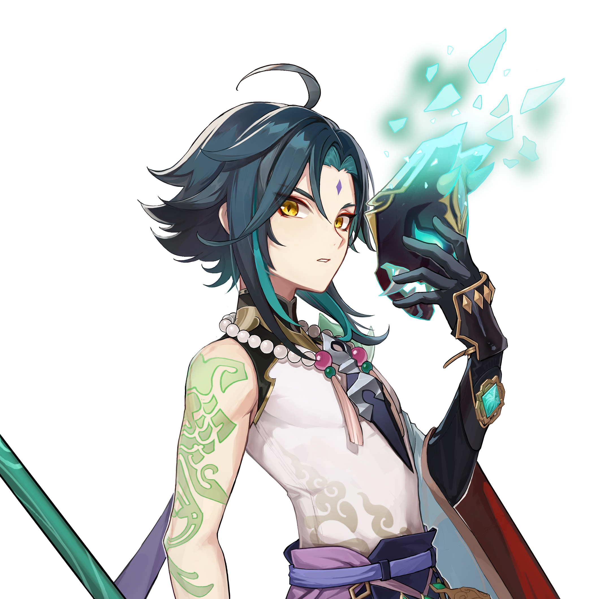
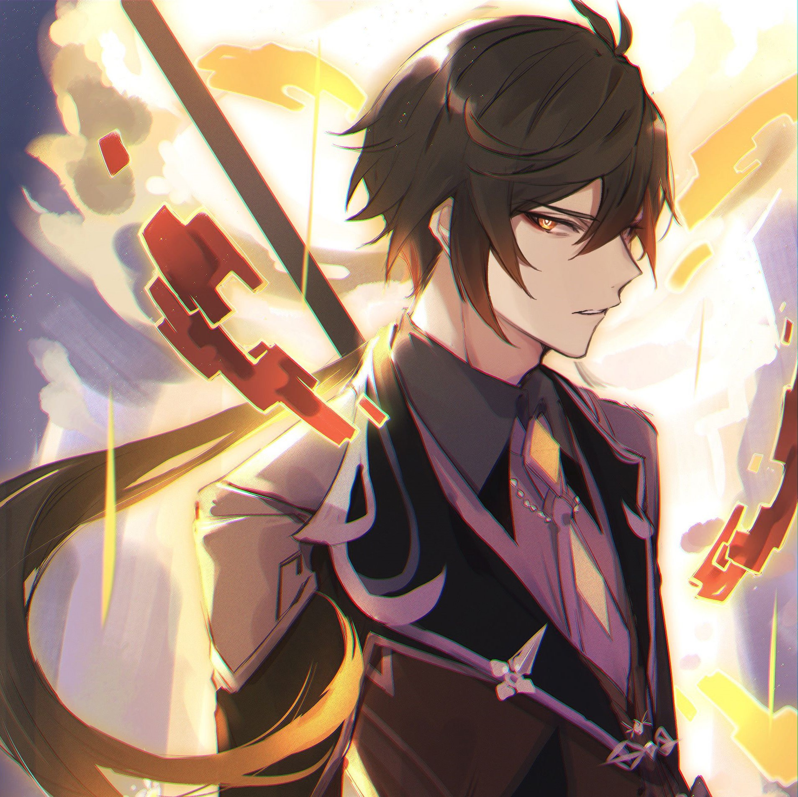
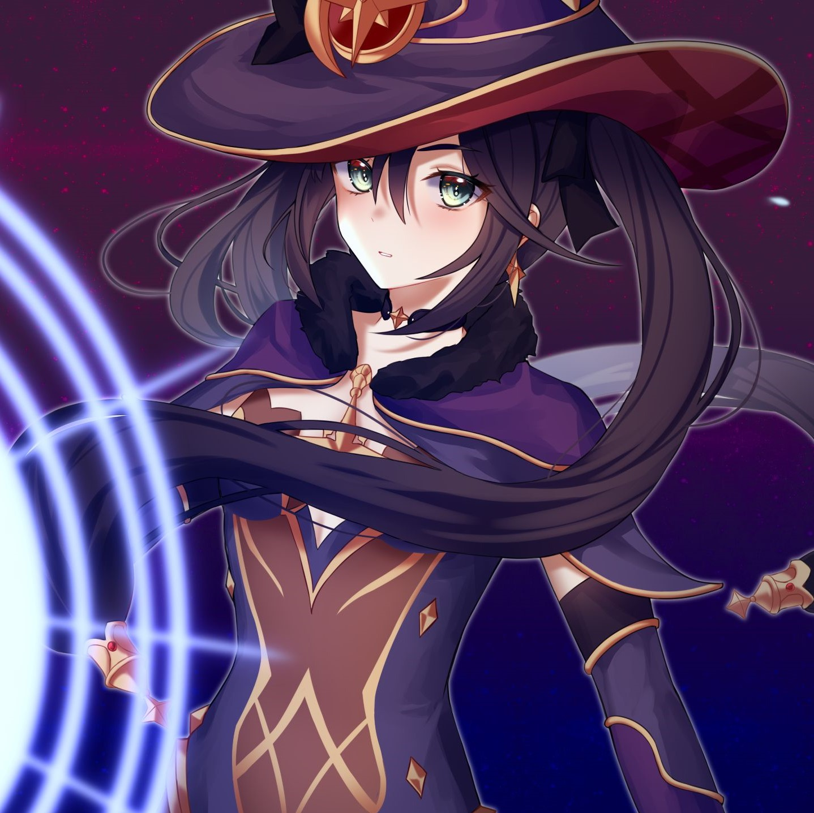

Genshin Impact takes place in the world of Teyvat, and is composed of seven major nations being Mondstadt, Liyue, Inazuma, Sumeru, Fontaine, Natlan, and Snezhnaya, each ruled by a god. The mysterious floating island of Celestia is allegedly home to gods and mortals who have ascended to godhood through great, heroic feats. Underground lay the ruins of the nation of Khaenri'ah which was destroyed by gods 500 years before the events of the game. Unlike the seven major nations, Khaenri'ah was not ruled over by a god. The player character, the Traveler, is separated from their twin and becomes trapped on Teyvat. They are joined by a companion, Paimon, as they journey through Teyvat in search for their lost sibling.
In this blog I shared some important character stories from my favourite game Genshin impact.
 
